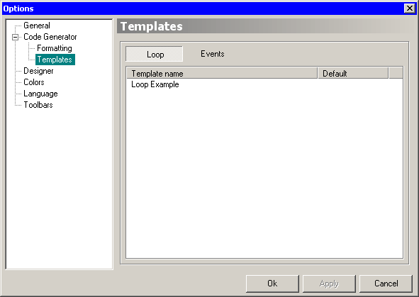

On this page you will see two buttons that switch lists of templates for message loop and event code.

Lists have a context menu with actions you can take on each of them. They are:
Creates a new template.
Opens Code Templates Editor for editing currently selected template. Editor also opens when double clicking a template name.
Deletes currently selected template.
Creates an exact copy of selected template.
Sets the “Default” flag for the selected template. Flagged template will be used for generating code when pressing F9 (standard mode). Only one template in group can have this flag set. This means that selecting a template will deselect a previously selected one.
Follow this link to obtain more information about Code Templates.